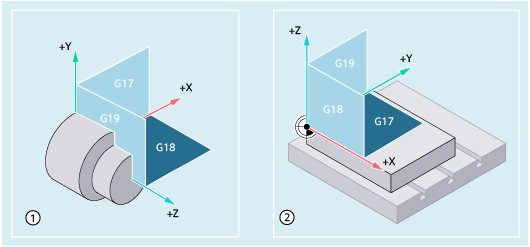
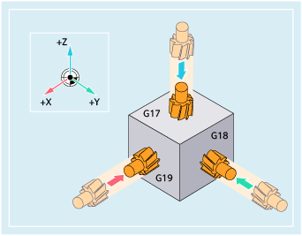

Ein NC-Programm benötigt die Information, in welcher Ebene die Bearbeitung stattfindet. Nur dann kann die Steuerung z. B. Werkzeugkorrekturwerte korrekt einrechnen. Des Weiteren wird die Angabe der Arbeitsebene für bestimmte Arten der Kreisprogrammierung und bei Polarkoordinaten benötigt.
Die Arbeitsebene wird im zu Grunde liegenden kartesischen Werkstück-Koordinatensystem durch zwei Koordinatenachsen festgelegt. Die dritte Koordinatenachse steht senkrecht auf dieser Arbeitsebene und bestimmt die Zustellrichtung des Werkzeugs (z. B. für 2D-Bearbeitung).
Die Arbeitsebenen werden im NC-Programm mit den G-Befehlen G17, G18 und G19 aktiviert. Der Zusammenhang ist wie folgt definiert:
G-Befehl | Arbeitsebene | Abszisse | Ordinate | Applikate ≙ Zustellrichtung |
|---|---|---|---|---|
G17 | X/Y | X | Y | Z |
G18 | Z/X | Z | X | Y |
G19 | Y/Z | Y | Z | X |
In der Grundeinstellung ist für Drehen G18 (Z/X-Ebene) und für Fräsen G17 (X/Y-Ebene) voreingestellt:
Arbeitsebenen beim Drehen ① und Fräsen ②
Zustellrichtungen beim Fräsen
Siehe auch:
Wahl der Arbeitsebene (G17/G18/G19)